Fizioterapie
Regăsită în stațiunile balneare sau cabinetele de recuperare, fizioterapia reprezintă o metodă de bază în vindecarea leziunilor și calmarea durerii, valorificând beneficiile oferite de dispozitive speciale de ultimă generație aduse direct la domiciliul tău.
Drenaj Limfatic (Presoterapie)
Utilizarea unui aparat profesional de drenaj limfatic aduce beneficii majore pentru circulația periferică și eliminarea toxinelor, fiind o metodă excelentă de recuperare vasculară și musculară.
Un aparat de drenaj limfatic oferă multiple beneficii cum ar fi:
- Reducerea umflăturilor, scăzând senzația de picioare grele sau umflate.
- Îmbunătățirea circulației sângelui și a limfei, contribuind la sănătatea vaselor de sânge și la o piele mai sănătoasă.
- Detoxifierea organismului, ajutând corpul să elimine reziduurile metabolice mai eficient.
- Reducerea celulitei, ajutând la reducerea aspectului de "coajă de portocală" al pielii.
- Relaxare și reducerea stresului, oferind o stare generală de bine.
- Întărirea sistemului imunitar – o bună funcționare a sistemului limfatic este esențială pentru un sistem imunitar puternic.
Drenaj Limfatic
Demonstrație aparat presoterapie la domiciliu
fizio_drenaj_limfatic.mp4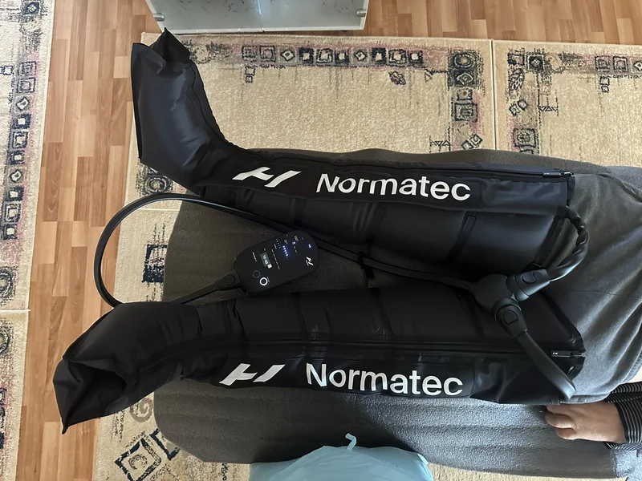
Aparat PresoterapieTerapie cu Ultrasunete
Terapia cu ultrasunete utilizează unde sonore de înaltă frecvență pentru a pătrunde în țesuturile profunde. Aceasta generează un micro-masaj celular și un efect termic local care accelerează vindecarea și reduce durerea.
Iată câteva dintre afecțiunile tratate cu ajutorul acestui aparat:
- Artrită și artroză
- Bursită
- Tendinite și tenosinovite
- Cicatrizare a rănilor și a țesuturilor fibroase
- Leziuni musculare și articulare
- Sindromul de durere miofascială
Terapie cu Ultrasunete
Demonstrație aplicare ultrasunete la domiciliu
fizio_ultrasunete.mp4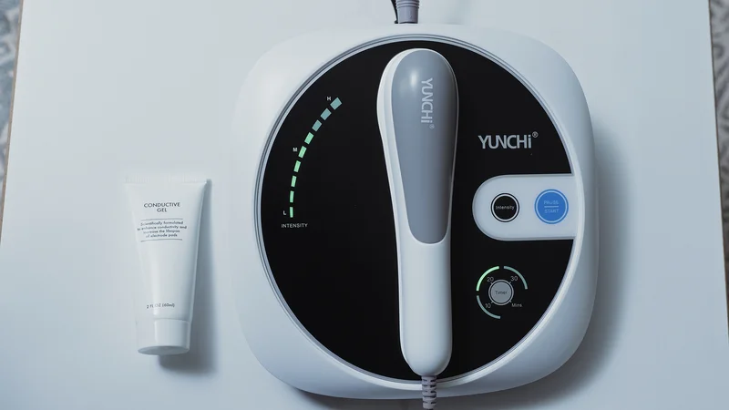
Aplicare Gel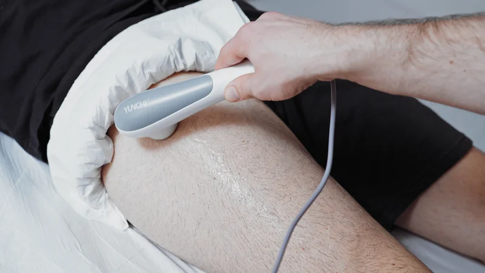
Tratament Coapsă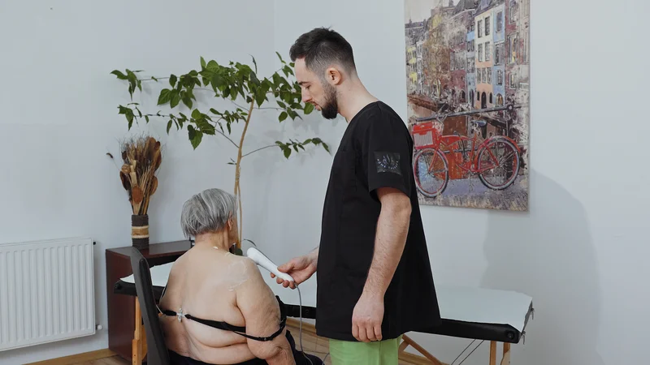
Ultrasunet UmărLaserterapie
Tratamentul cu laser aduce cu sine o serie de caracteristici inovatoare și deosebite care îl fac o opțiune terapeutică esențială în biostimularea și regenerarea celulară rapidă.
- Precizie și focalizare: Permite tratarea unei zone specifice și profunde fără a afecta negativ țesuturile sănătoase din jur.
- Stimularea vindecării: Stimulează metabolismul celular local, regenerarea țesuturilor și formarea de noi vase de sânge (neovascularizație).
- Personalizare: Permite ajustarea puterii laserului și a lungimii de undă pentru a se potrivi cu afecțiunea și caracteristicile unice ale pacientului.
- Reducerea durerii și inflamației: Efect antiinflamator și analgezic puternic, fără a recurge la administrarea de medicamente.
Laserterapie
Demonstrație laserterapie biostimulativă la domiciliu
fizio_laserterapie.mp4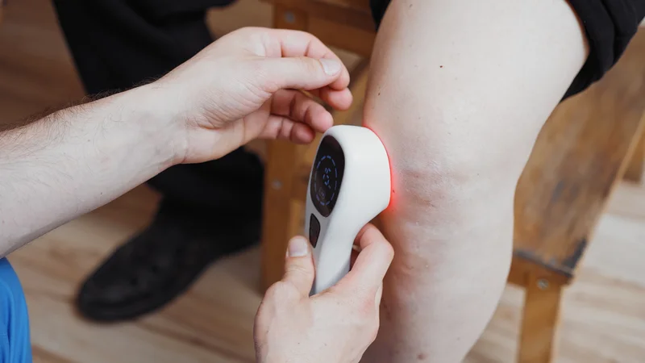
Terapie Genunchi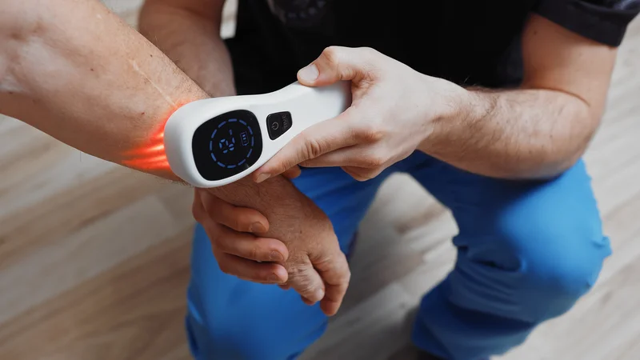
Reducerea Durerii Postoperator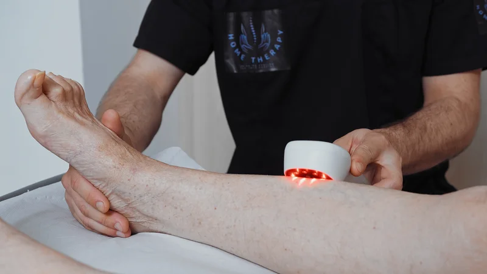
Laser Membru InferiorElectroterapie Compex
Aparatul de electroterapie Compex folosește tehnologia electrostimulării musculare (EMS) și a curenților terapeutici pentru a stimula selectiv fibrele musculare, favorizând ameliorarea durerilor și refacerea funcțională.
Afecțiuni tratate cu aparatul de electroterapie:
- Recuperare în sport și atrofie musculară
- Tulburări neuromusculare și pareze
- Reabilitare postoperatorie
- Leziuni musculare și articulare
Beneficiile majore includ:
- Relaxare musculară: Prin stimularea contracțiilor controlate și eliberarea tensiunii, reduce spasmele musculare și rigiditatea.
- Recuperare musculară: Accelerează eliminarea toxinelor și refacerea după leziuni, intervenții chirurgicale sau antrenamente intense.
- Stimulare musculară: Contribuie la creșterea forței și a tonusului muscular, îmbunătățind performanța și rezistența.
- Ameliorarea durerii: Prin stimularea producției de endorfine (TENS), reduce inflamația și durerea în afecțiuni precum durerile de spate, articulare sau musculare.
Electroterapie Compex
Demonstrație electrostimulare musculară la domiciliu
fizio_electroterapie.mp4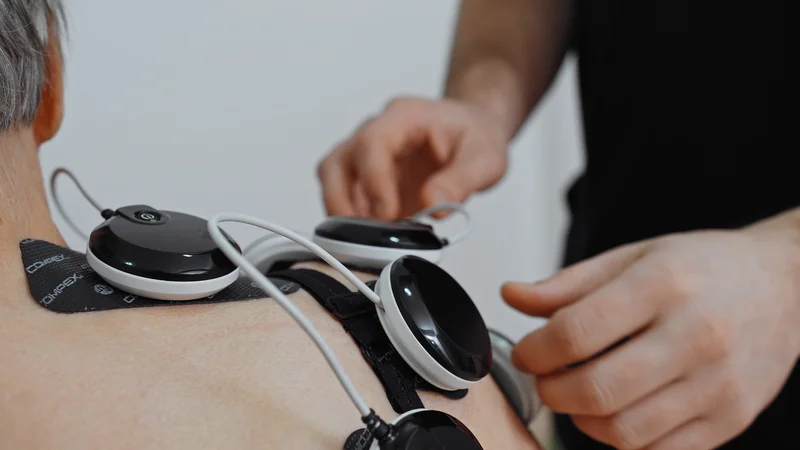
Poziționare Electrozi Conectare Canale
Conectare Canale
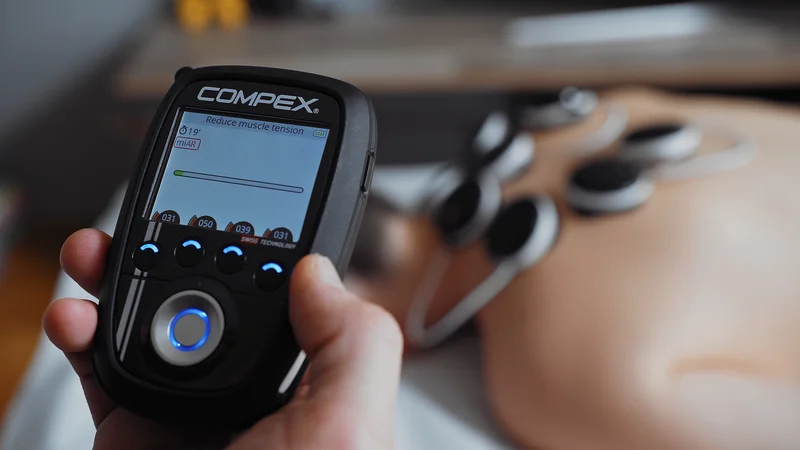
Recuperare Cvadriceps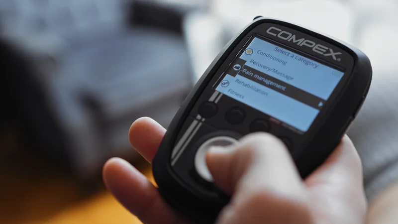
Tratament Antialgic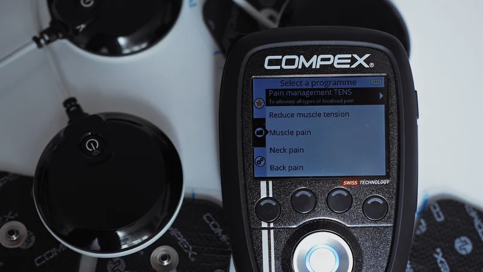
Tonifiere Activă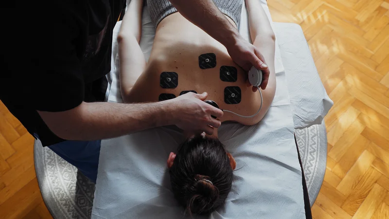
Capilarizare CompexTerapie Percutivă cu Pistol Theragun
Terapia percutivă cu ajutorul dispozitivului profesional Theragun oferă impulsuri rapide și adânci în țesutul muscular, stimulând circulația locală și eliberând nodurile de tensiune miofascială mult mai rapid.
Vibromasajul și terapia percutivă oferă un real beneficiu în ameliorarea simptomelor de:
- Fibromialgie și dureri cronice generalizate
- Sindromul de tunel carpian și contracturi profesionale
- Circulație sanguină deficitară la nivelul membrelor
- Recuperare musculară accelerată după eforturi intense
- Reducerea stresului și a anxietății musculare
Terapie Percutivă Theragun
Demonstrație vibromasaj percutiv la domiciliu
fizio_theragun.mp4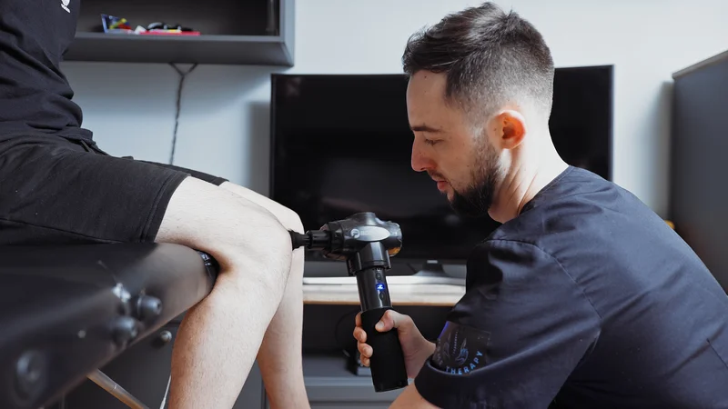
Detensionare Spate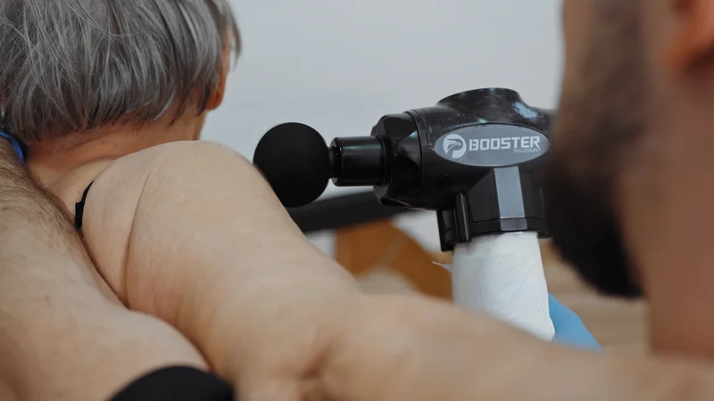
Recuperare Gambă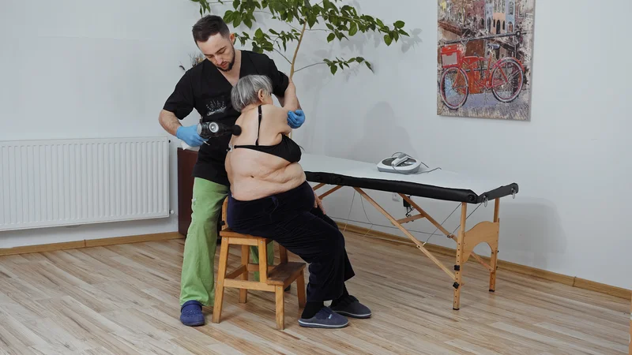
Terapie Coapsă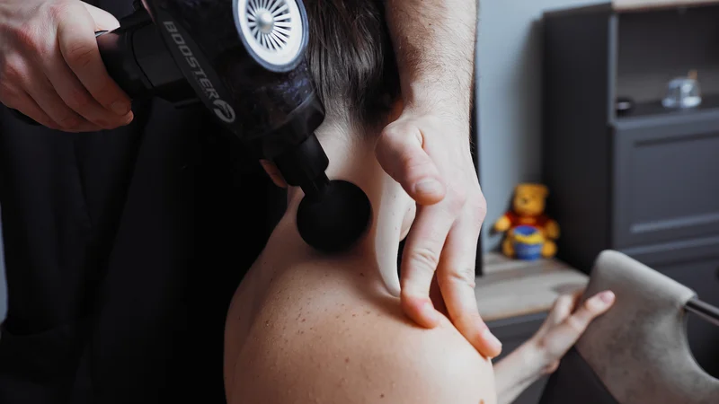
Puncte TriggerVentuze cu Infraroșu și Clasice
Terapia cu ventuze (cupping) este folosită pentru detensionarea rapidă a fasciilor musculare, stimularea fluxului sanguin și spargerea aderențelor țesuturilor moi.
În funcție de necesitățile și particularitățile fiecărui pacient, voi folosi diferite tipuri de ventuze:
- Ventuze cu Infraroșu: permit reglarea electronică a intensității vidului și încălzirea punctului dureros pe niveluri, pentru a trata o gamă largă de afecțiuni inflamatorii sau cronice.
- Ventuze din Silicon: flexibile și ușor de utilizat, facilitează glisarea ventuzei pe piele pentru terapia prin masaj dinamic.
- Ventuze cu Vacuum și Punct Magnetic: acționează la nivel dublu prin vacuum și magnetoterapie, facilitând spargerea punctelor trigger dureroase și sporind circulația sanguină în zona tratată.
Terapie cu Ventuze
Demonstrație vacuum și infraroșu la domiciliu
fizio_ventuze.mp4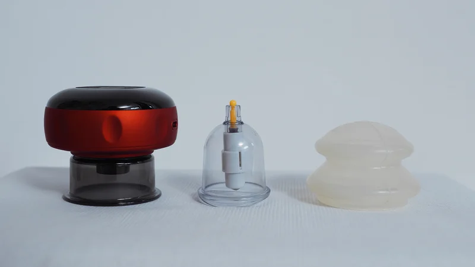
Ventuze Electronice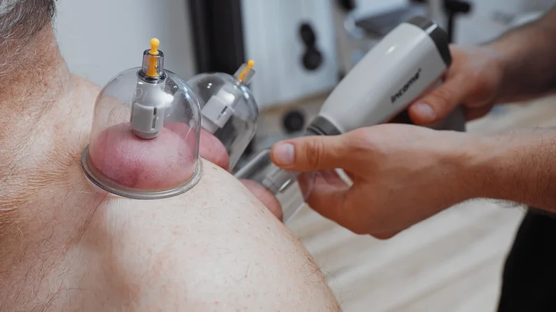
Ventuze Silicon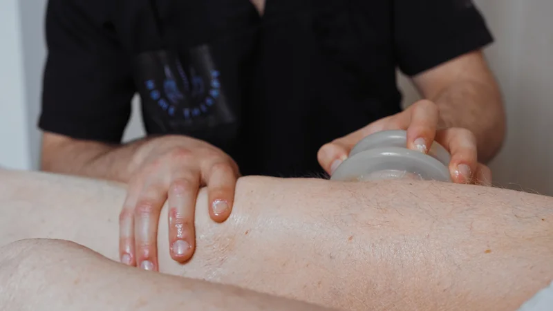
Masaj Vacuum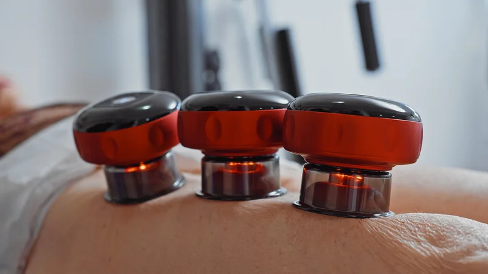
Ventuze Magnetice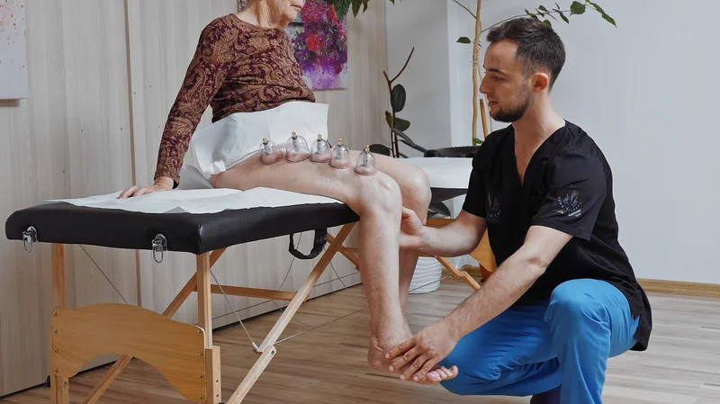
Hiperemie LocalăProgramează o ședință la domiciliu
Mă deplasez în Oradea cu pat special de masaj și toate echipamentele de fizioterapie necesare recuperării tale.
Sună: 0752 847 555